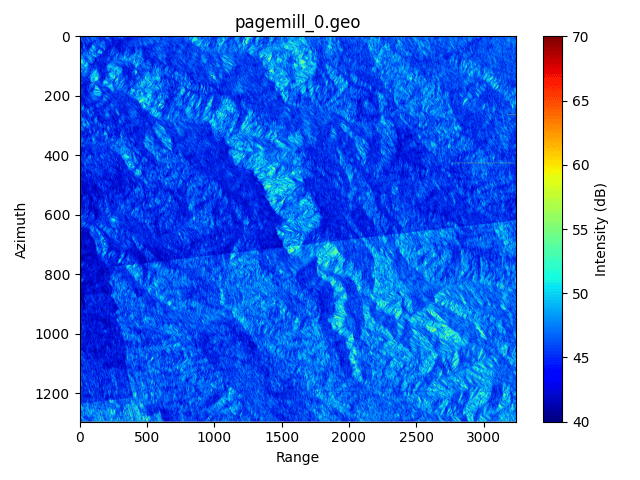

Stanford Smart Sensing Systems Lab
Algorithm Development for Satellite Backscatter Communication
--
Implemented a signal processing algorithm for passive RF backscatter communication using existing SAR infrastructure.
Partitioned the aperture into sublooks to encode bits, performed range/azimuth compression, and computed
Signal-to-Clutter Ratio (SCR) per sublook and across sublooks. I also wrote a program to estimate the Radar Cross Section (RCS)
of a point target from L0-RAW SAR data. The results for this were validated with theoretical estimates to within 2 dB.
I also simulated the effect of corner reflectors in raw SAR data by modifying the collected I/Q samples with a point target response.
This allowed us to generate controlled ground-truth test cases for backscatter experiments without field deployment.